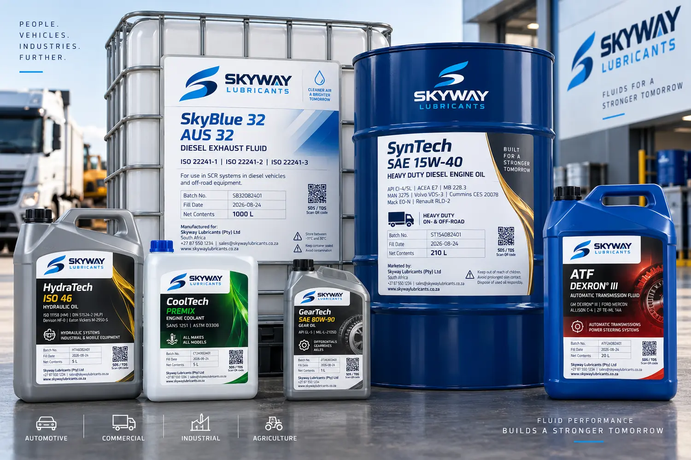
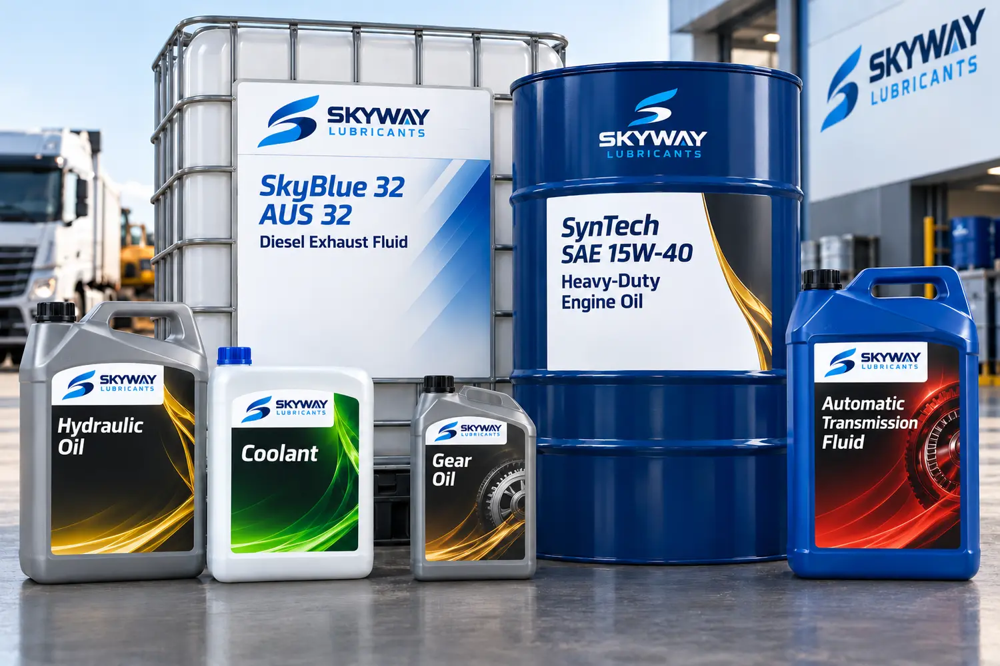
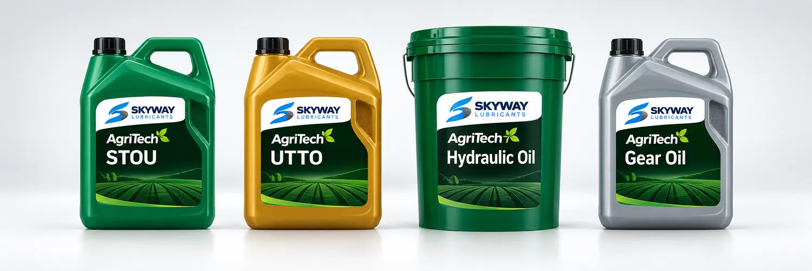
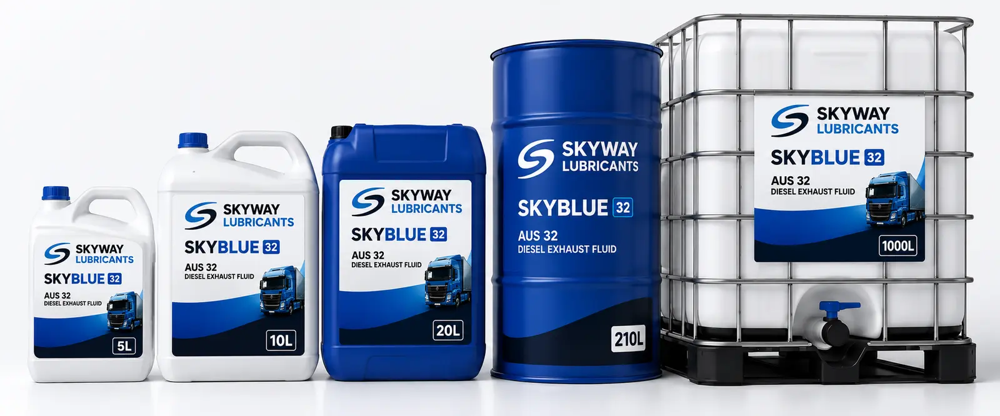
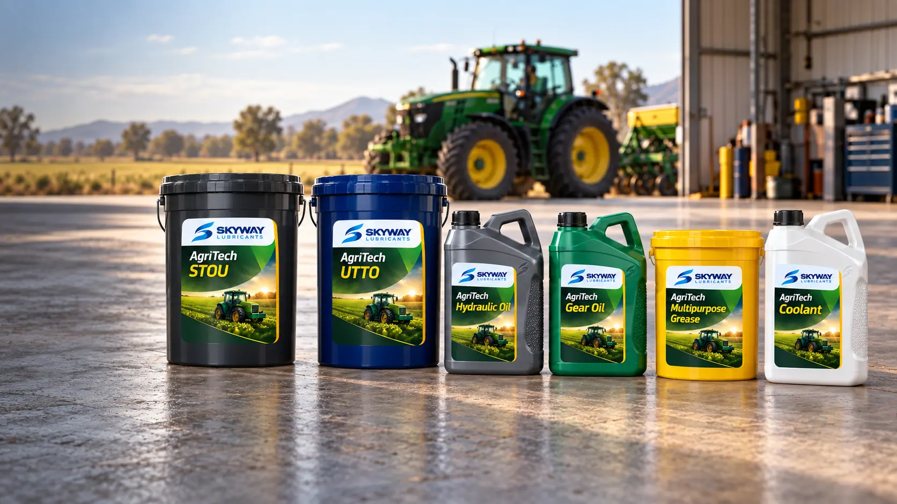
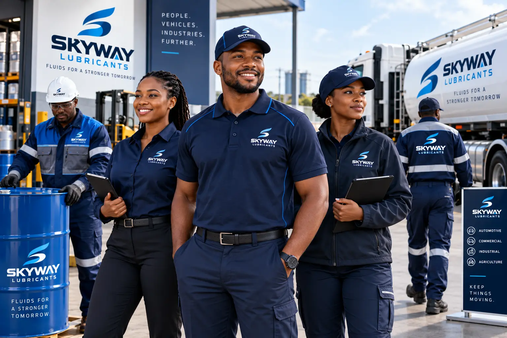
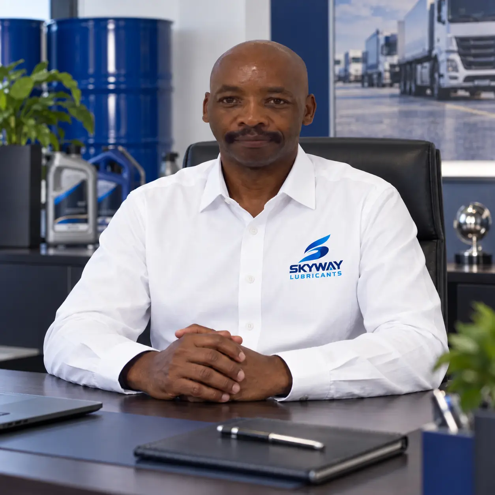
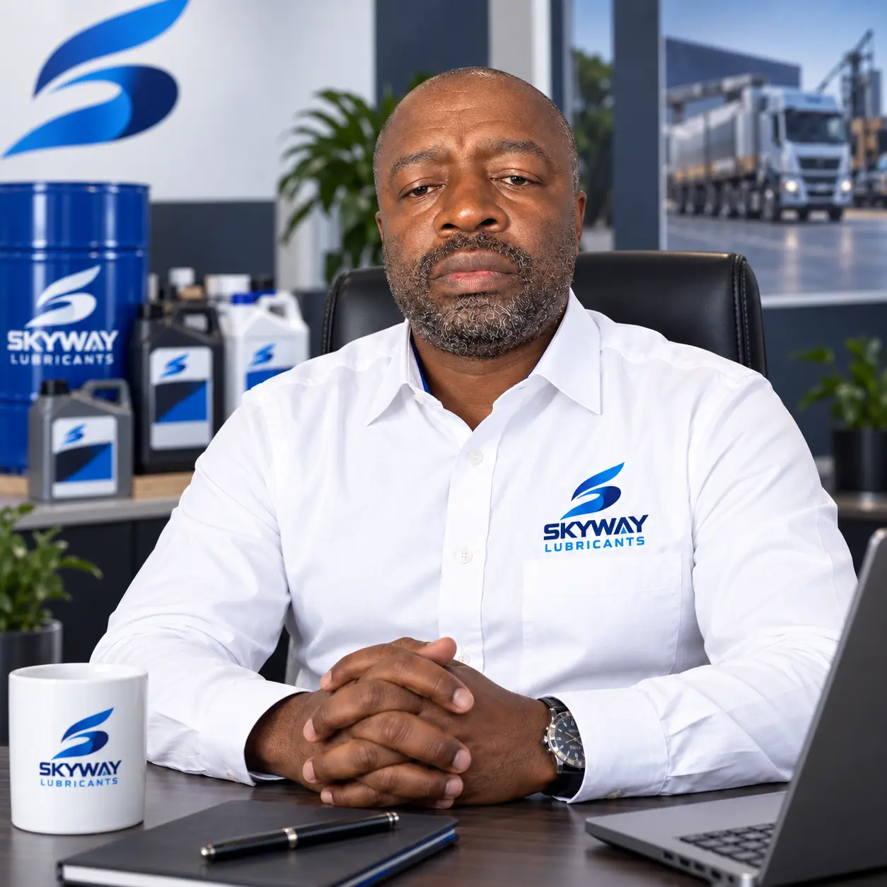

Reliable Supply
Consistent product availability and dependable replenishment.
Fluids for a stronger tomorrow
Reliable lubricants and fluid solutions for fleets, equipment, agriculture and industry across the Eastern Cape.
People. Vehicles. Industries. Further.
Why Skyway
Skyway Lubricants helps businesses simplify lubricant and fluid procurement through dependable supply, fit-for-purpose lubricant and fluid selection, responsive service and practical replenishment support.
Consistent product availability and dependable replenishment.
Clear product specifications, documentation and application guidance.
Multiple lubricant and fluid requirements through one responsive partner.
Solutions for fleets, workshops, farms, contractors and industrial operations.
Product range
A focused product range for vehicles, fleets, agricultural equipment and industry.

Fluids for passenger vehicles, commercial fleets and workshop requirements.

Commercial pack formats for plant, machinery, mobile equipment and workshops.

A dedicated family for tractors, implements, mobile hydraulics and farm workshops.
Flagship fluid
For compatible SCR-equipped diesel vehicles and equipment. Available for fleet, workshop, commercial and bulk requirements.


Agricultural fluids
Lubricants and fluid solutions for tractors, implements, mobile hydraulics and agricultural equipment.
Tractors • Implements • Hydraulics • Final Drives • Workshops • Agricultural Equipment
Discuss your agricultural requirementsIndustries we serve
Supply shaped around the equipment, environment and purchasing realities of each operation.
Passenger vehicles, workshops and light commercial applications.
Trucks, buses, transport operators, logistics companies and fleet workshops.
Manufacturing, plant, machinery, construction and industrial operations.
Farms, tractors, implements and agricultural equipment.
How we support customers
From routine replenishment to consolidated fluid requirements, Skyway Lubricants is structured to support businesses that need dependable supply and responsive service.

Identify fluids, applications, consumption profile and packaging requirements.
Align products with the required application and available technical documentation.
Support ongoing ordering, commercial pack sizes and replenishment planning.
Structure recurring supply as usage grows.
Technical credibility
Technical buyers should be able to understand what a product is, where it belongs and what specification it represents without relying on vague marketing claims.
Request technical documentationSkyway product information is intended to clearly communicate:
Company
Skyway Lubricants is led by people who understand both the fluids that protect working assets and the fleets that depend on them. That combined experience shapes a responsive supply business built around the realities of Eastern Cape fleets, workshops, farms and industrial customers.

Brings extensive experience in fuels and lubricants, providing strategic leadership and industry perspective as Skyway builds a credible, dependable fluid-solutions business.

Brings extensive experience in fleet management, grounding Skyway's customer proposition in the practical demands of vehicle uptime, fluid procurement and reliable replenishment.
Ready to discuss your requirements?
Whether you operate a fleet, workshop, farm, plant or contracting business, talk to Skyway about your lubricant and fluid requirements.
Commercial enquiries • Fleet requirements • Agricultural fluids • Bulk supplyContact
Tell us what you operate, what you use and what you need.